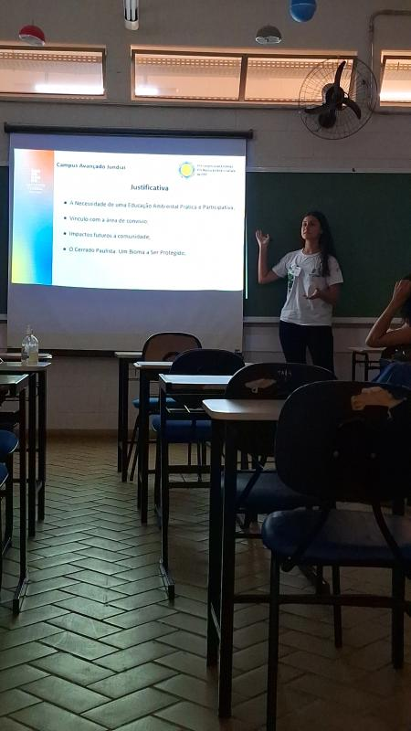
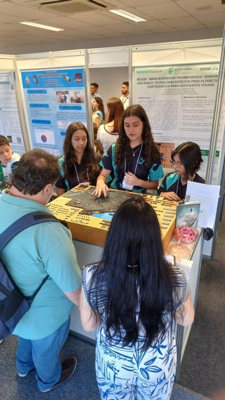

Meu nome é Aline Mariane Rincon, natural de Jundiaí (SP) e com fortes laços familiares em Campo Limpo Paulista. Tenho uma trajetória marcada pelo engajamento acadêmico desde o ensino médio, realizado no IFSP, onde colaborei ativamente na comunidade acadêmica como bolsista de extensão em um projeto de plantio de mudas e como voluntária em desenvolvimento com Arduino. Atualmente, resido em São José dos Campos, onde dou continuidade à minha formação acadêmica como estudante na Unifesp.
Atuei como bolsista em projeto de extensão, colaborando em equipe, organizando atividades, participando da comunicação com a comunidade e apresentando trabalhos em congressos, além de desenvolver conhecimentos em educação ambiental por meio de atividades práticas.

Atuei como voluntária no projeto de Arduíno, participando do desenvolvimento de projetos tecnológicos e inovadores. Colaborei na criação do "Mapa Tridimensional Sensorial do Estado de São Paulo" e da Horta Automática".
